Top Recipes
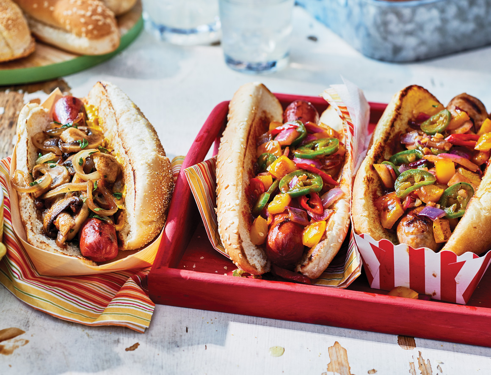
Hot Pepper BBQ Topper
- In bowl, stir together onion, yellow pepper, jalapeno, finger chili, garlic, oil and salt. Scrape onto large double-layer sheet of foil. Fold foil over and crimp edges together to create a sealed packet.
- Place on BBQ preheated to medium-high. Close lid and cook, 15 to 20 min. until vegetables are tender. Transfer to bowl and mix with BBQ sauce.
- Serve as a topper for grilled hot dogs or sausages, burgers, sandwiches, grilled cheese or nachos.
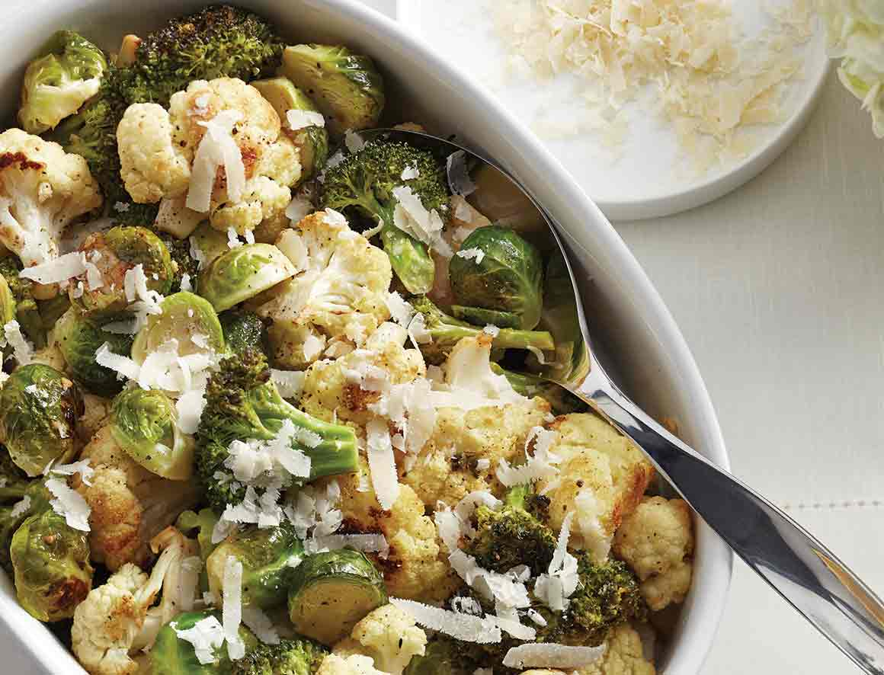
Apple Pie
- Preheat oven to 425ºF (220ºC). To make vinaigrette, whisk oil with lemon juice, garlic, salt, pepper and mustard. Stir in 1/4 cup (60 mL) grated cheese. Toss broccoli, cauliflower and Brussels sprouts with vinaigrette. Spread on large baking sheet.
- Roast 35 to 45 min. until tender and lightly caramelized. Sprinkle remaining grated or shaved cheese over top. Serve warm or at room temperature.
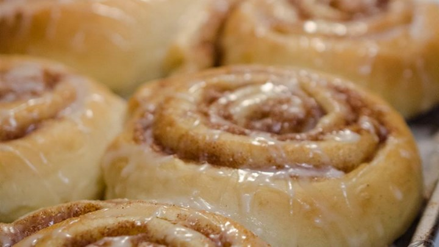
Danish Cinnamon Snails
- Pour the warm milk into a mixing bowl and mash in the fresh cake yeast. Mix in 6 1/2 tablespoons of soft butter, eggs, cardamom, 2 tablespoons sugar, salt, and 3 1/2 cups of the flour. Use a wooden spoon to mix the dough. If it's very sticky, mix in the remaining 1/2 cup of flour. Cover the bowl and let the dough rise for 30 minutes.
- Cream together the 2/3 cup butter and 1/2 cup sugar. Stir in the cinnamon.
- Transfer the dough to a floured surface and knead it until it's firm, about 3 minutes. Divide the dough in half; roll each half into a rectangle no more than 1/2 inch thick. Spread each rectangle with half the filling.
- Stack one layer of dough and filling on top of the other rectangle of dough, filling-side up. Roll the dough up, starting with the edge closest to you, to form a long log. Cut the log into 1 inch-thick slices.
- Preheat an oven to 425 degrees F (220 degrees C). Line a baking sheet with parchment paper, or grease a baking dish or two cake pans.
- Place the rolls on the prepared baking sheet, spacing them about 3 inches apart. If you like pull-apart rolls, arrange them in a greased baking dish or cake pans, spacing the rolls about 1 inch apart. Place the uneven end pieces on the baking sheet cut-side up for the best presentation. Let the rolls rest 20 minutes before baking.
- Bake the snails in the preheated oven until golden brown, about 10 minutes. Pull-apart rolls will take longer to bake: after 10 minutes, reduce the oven temperature to 350 degrees F (175 degrees C) and bake the rolls until the sides are fully set, about 10 minutes longer. Cover the baking dish with foil if the rolls begin to get too brown.
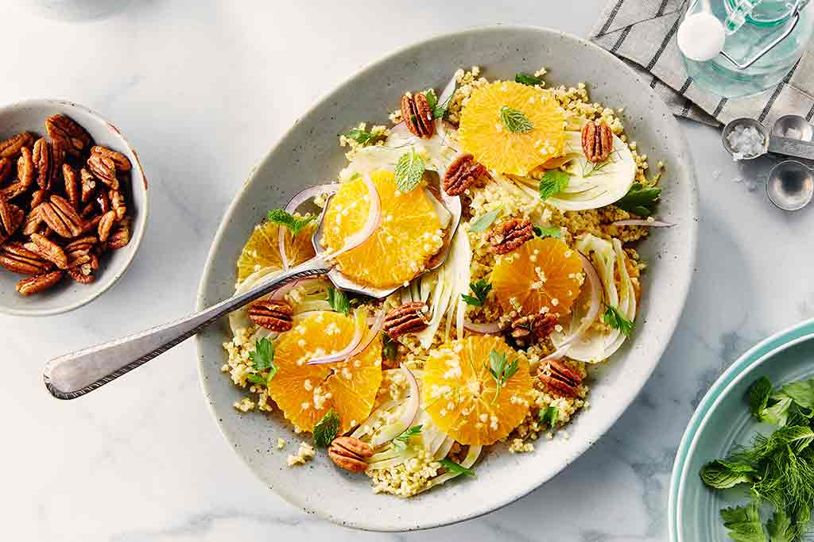
Shaved Fennel, Orange, Candied Pecans and Toasted Millet
- Preheat oven to 200°C. Toss pecans with maple syrup in small bowl. Add sugar,salt,and cayenne; toss to coat. Spread coated nuts onto a parchment-lined baking sheet and roast for 5-10 minutes. Set aside and cool.
- While the oven is still hot, spread 1 cup of millet on a baking sheet and toast for 5 minutes. Bring 2 cups of Campbell’s broth to a boil in a medium pot. Add toasted millet; cover, reduce heat to medium-low and simmer until all the water is absorbed, about 20 minutes. Rinse in a fine colander and set aside to cool.
- Whisk together lemon juice, olive oil, and a dash of salt in a large bowl. Add cooled millet. Shave fennel and onion directly into the bowl with a mandoline, or slice thin on a cutting board and add to the dressing and millet. Add orange slices, mint, and parsley leaves. Toss lightly to combine. Garnish with additional herbs and candied pecans.
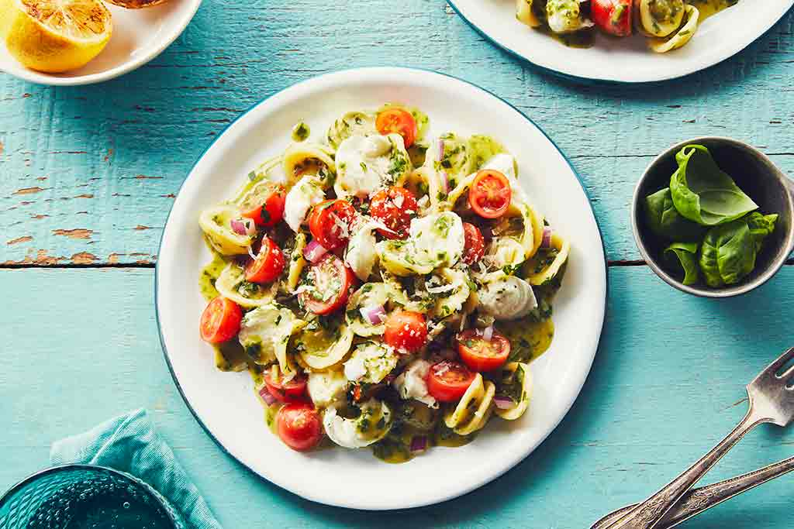
Tomato and Mozzarella Pesto Orecchiette Salad
- Place pasta and Campbell's broth in a saucepan with a tight-fitting lid and bring to a boil. Cook for 2 minutes. Remove from heat, cover and let sit until most of the liquid has been absorbed and the pasta is al dente; about 15 minutes. Stir to loosen and set aside to cool.
- In blender, combine basil, olive oil, pine nuts, garlic, parmesan, salt, and pepper. Blend until smooth.
- In a large bowl, combine tomatoes, mozzarella, and red onion. Toss with pasta and the cooking liquid, pesto, parsley and basil until well blended.
- Grill or char lemons on the grill or in a pan. Serve salad on a platter with lemons and squeeze lemons over just before serving.
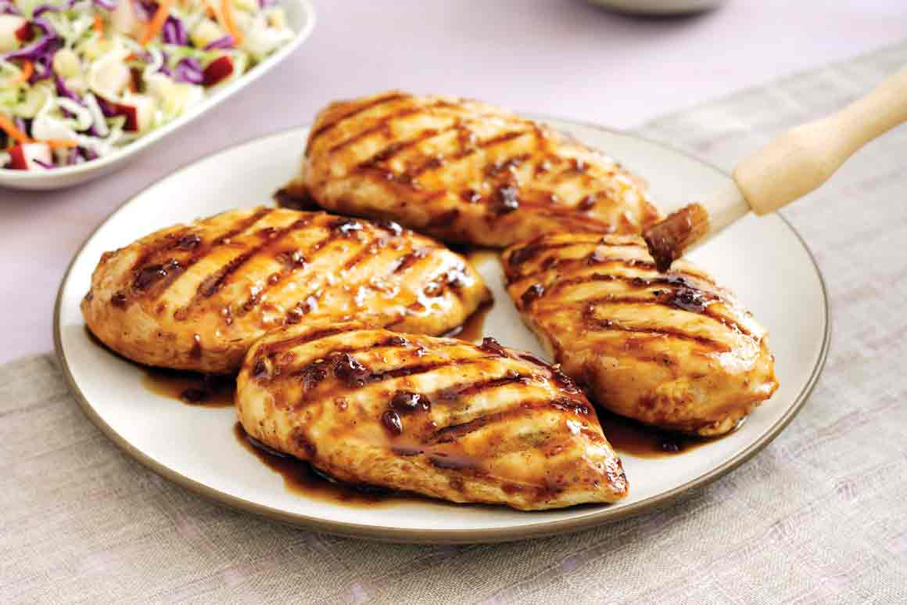
Grilled Teriyaki Chicken with Apple-Pineapple Coleslaw
- Brush both sides of chicken generously with 1/2 cup marinade and let sit 10 minutes.
- Preheat gas grill on high or prepare coals.
- Meanwhile, make coleslaw by combining all ingredients in a medium-sized bowl.
- Grease grill rack.
- Grill chicken (covered) 3-4 inches from coals for 5-8 minutes per side.
- Remove to plates and brush chicken breast with remaining marinade.
- Serve with coleslaw.
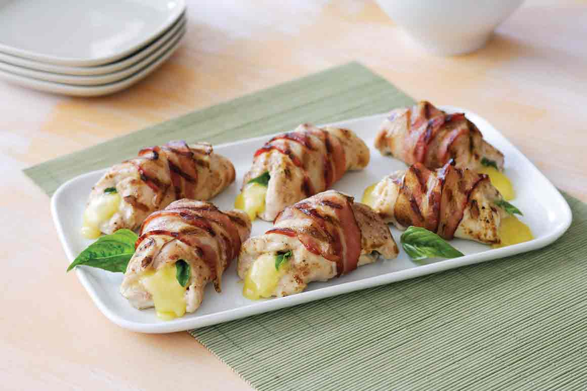
Chicken Bundles with Bacon Cheese and Basil
- Prepare a gas or charcoal barbecue for medium-high heat.
- While barbecue heats,place a chicken breast between 2 sheets of plastic wrap.
- With a smooth meat mallet, pound chicken until it is 1/4 inch thick.
- Repeat to pound all chicken.
- Arrange 1 or 2 basil leaves in the center of each pounded chicken breast.
- Place a piece of cheese on top of basil.
- Fold sides of chicken up and over basil and cheese to enclose tightly and completely.
- Secure tightly with skewers.
- Brush chicken bundles with oil and season to taste with salt and pepper.
- Tightly wrap 1 strip of bacon around each bundle, securing it with skewers if necessary.
- Place bundles on grill over heat. Cover and cook until undersides are browned, 5-7 minutes.
- Turn bundles and cook to brown other sides, about 5 more minutes.
- Continue cooking, turning once or twice more, until chicken is well browned and nolonger pink in center (carefully cut to test so that melted cheese does not run out),5-10 more minutes.
- Transfer to a serving platter. Remove skewers and serve.
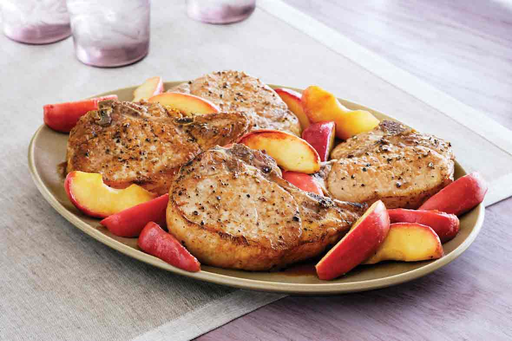
Pork Chops with Caramelized Apples
- Core unpeeled apples and cut each into 8 wedges.
- Melt 1 tablespoon butter in a 12 to 14-inch nonstick frying pan over medium-high heat.
- Add apples and cook without turning until undersides of wedges are lightly browned, about 5 minutes.
- Turn wedges over and cook to brown other sides, 3 to 4 more minutes.
- Sprinkle sugar over apples; stir to evenly coat.
- Cook, turning often, until sugar melts and apples are glazed and well browned, about 2 more minutes.
- Transfer to a serving platter and keep warm.
- To the pan, add remaining butter.
- Season chops to taste with salt and pepper.
- Add chops to pan and cook until undersides are well browned, about 5 minutes.
- Turn chops over and cook until other sides are well browned and meat is just barely pink in the center (cut to test), 3 to 4 more minutes.
- Transfer chops to serving platter and serve with the apples.
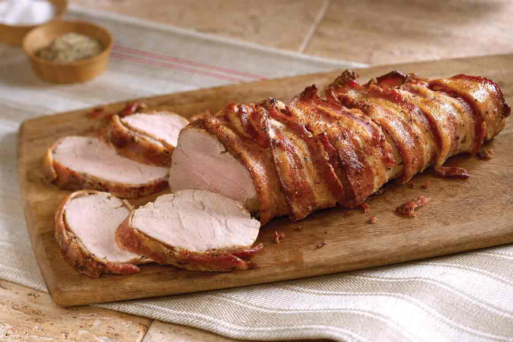
Bacon Wrapped Pork Roast
- Preheat oven to 450°F.
- Rinse meat and pat dry. (If you are using pork tenderloin, you will have 2 pieces of meat).
- Rub meat evenly all over with rub.
- Wrap bacon around pork in a spiral fashion so that it covers most of the meat. (For pork tenderloin, divide bacon between the two pieces of meat.)
- Place wrapped meat on a rack in a roasting pan.
- Roast meat until internal temperature reaches 155°F and is just barely pink in center (use a meat thermometer and cut to test), 30-35 minutes.
- Transfer pork to a serving platter and let stand 5 minutes.
- Cut crosswise into slices to serve.
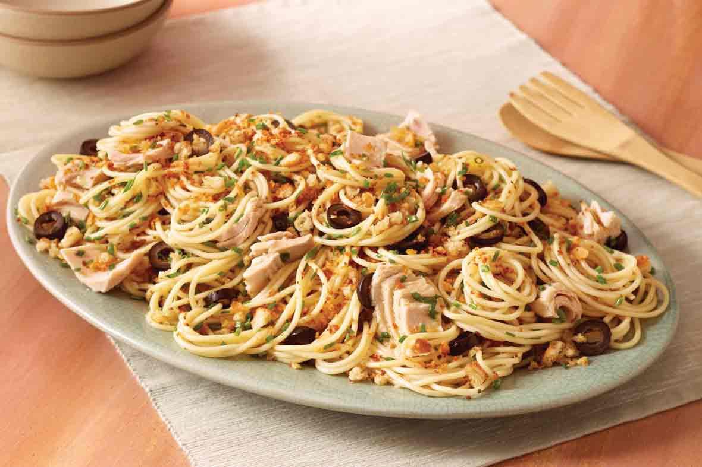
Garlic Spaghetti with Tuna and Olives
- In a 5 to 6-quart pan, bring 3 quarts of salted water to a boil over high heat.
- Add spaghetti and cook until pasta is tender to bite, about 12 minutes.
- Meanwhile, whirl bread in a food processor until coarse crumbs form.
- Melt butter in a 12-inch nonstick frying pan over medium-high heat.
- Add bread and cook, stirring often, until crumbs are lightly toasted, 9-10 minutes.
- Watch carefully so they don’t burn.
- Remove from heat and transfer to a plate.
- Wipe frying pan clean and return it to high heat.
- Add broth, olives, garlic, and 2 tablespoons olive oil.
- Bring to a boil, then reduce heat and simmer 2 minutes.
- When spaghetti is done, drain it well then return it to its cooking pan.
- Add the hot broth mixture along with the tuna, toasted bread crumbs, and chives.
- Mix well then transfer to a serving bowl and serve immediately.
- Offer additional olive oil to drizzle over portions to taste.
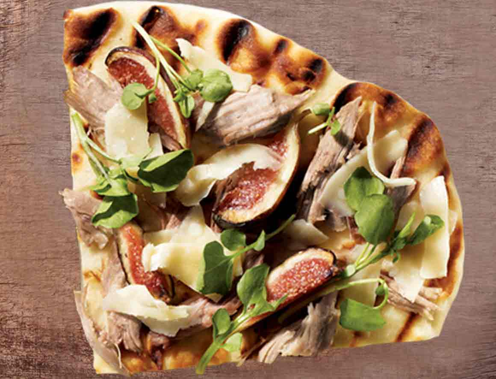
Chicken Parmesan Pizza with Fresh Fruit and Watercress
- Preheat the broiler or a lightly oiled grill pan to high. Brush both sides of naan lightly with olive oil and broil or grill crust, 2 mins per side, or until golden in spots.
- Layer chicken and fresh fruit onto warm naan; sprinkle parmesan shavings and watercress overtop to serve.
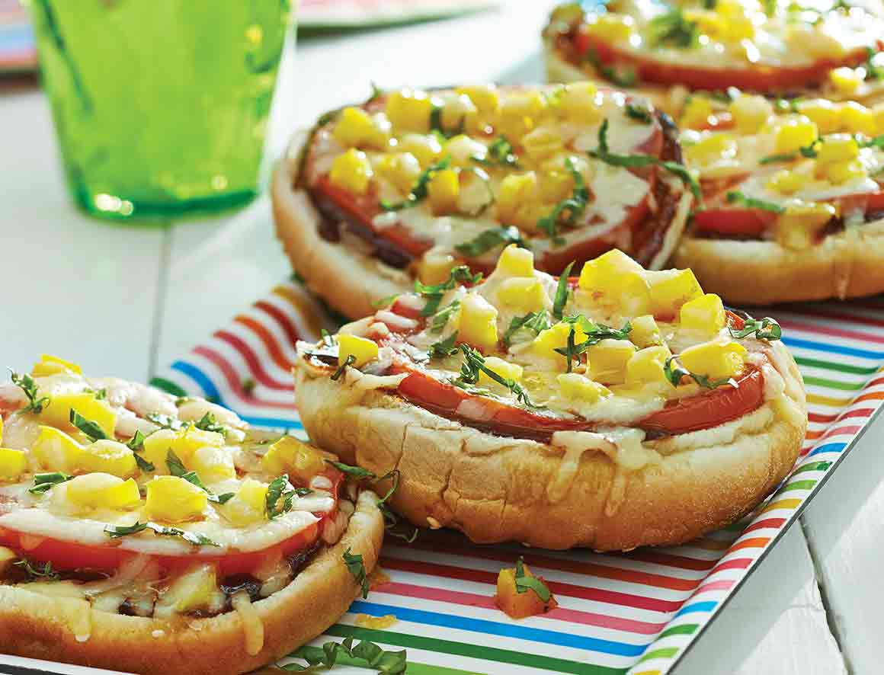
Grilled Burger Bun Tomato and Cheese Pizzas
- Spread barbecue sauce on cut-sides of the 6 bun halves. Top with tomato, yellow pepper and cheese.
- Place buns directly on grill preheated to medium-low. Grill with lid closed about 5 min., or until cheese has melted and buns are toasted. Sprinkle basil on top before serving.
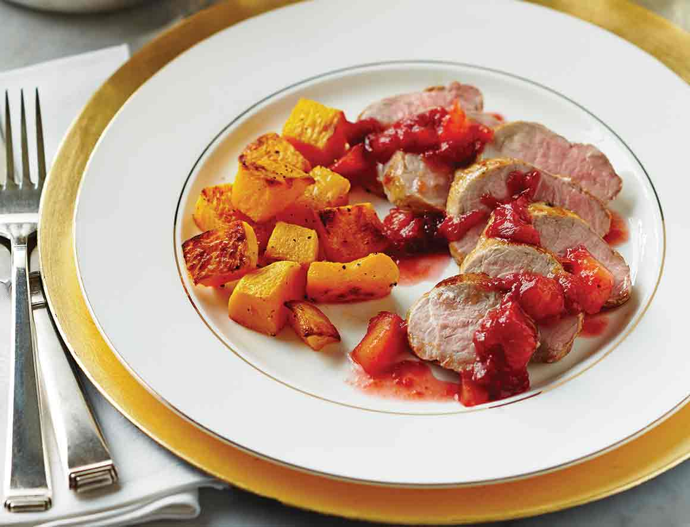
Roast Pork Tenderloin with Plum Chutney and Butternut Squash
- Preheat oven to 425°F (220°C). In saucepan, combine plums, brown sugar, vinegar, ginger, star anise, clove and cinnamon stick. Bring to a boil, then reduce to a simmer 30 min., or until thick and syrupy. Discard star anise, clove and cinnamon stick. Set plum chutney aside, keep warm.
- In large bowl, mix butternut squash with 2 tbsp (30 mL) oil, 1 tsp (5 mL) salt and 1/2 tsp (2 mL) pepper to coat. Arrange in single layer on parchment-lined baking sheet. Roast squash 30 to 35 min., turning halfway, until golden brown and tender.
- Meanwhile, season tenderloins with remaining salt and pepper. Heat remaining oil in large non-stick skillet over medium-high heat. Brown tenderloins on all sides, 4 to 6 min. Place on parchment-lined baking sheet. Cook in the preheated oven 15 to 17 min., or until an instant-read thermometer registers 160°F (71°C) when inserted into the thickest portion of the meat. Let stand 10 min. before slicing.
- Served pork with plum chutney and roasted butternut squash on side.